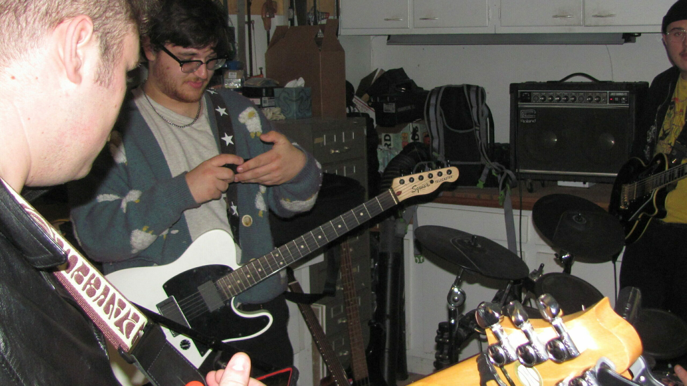
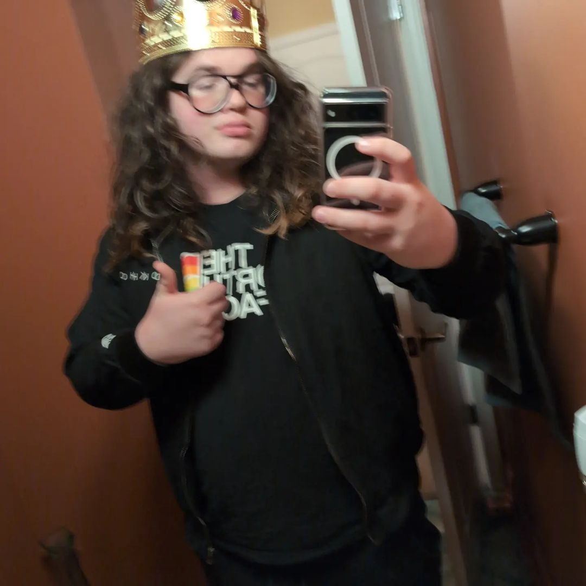

About Giants of All Sizes!
Giants of All Sizes are a 5-piece genre-bending band from the Philadelphia area. We play all kinds of music from funk to metal. If you can’t find one song you like then you probably hate music. Currently, we are harvesting the best musical fruits from Montgomery County, and preparing to deliver them directly to your streaming service of choice.

About the Band
Tommy Crotty
Hi, I’m Tommy! I mostly play drums but I can also play mallet percussion, and I like to pretend I know how to play guitar sometimes. The things that keep me going are my cat and Jakob Stein.
3 songs that influence my sound:
After Midnight – Blink-182
Holiday – Green Day
Zombie – The Cranberries

Merle John
Hello, my name is Merle John, and I am a multi instrumentalist who mainly plays the guitar and bass guitar but also plays other things like the cello.
Three songs that influence my sound
Watermelon Man- Herbie Hancock
Shine On You crazy Diamond pts 1-5- Pink Floyd
Friend of the Devil- Grateful Dead

Jakob Stein
My name is Jakob Stein. I am a multi instrumentalist with a focus on guitar. I like to make weird music.
Three songs that influence my sound:
The Wheel -IDLES
Flimsier- King Krule
Little Dipper- Hum

Dylan Renner
My name is Dylan Renner, I’m a multi instrumentalist with a focus on bass and guitar. I write songs sometimes and I enjoy alternate tunings and weird time signatures.
Three songs that influence my sound:
All for You by Chestnut Grove
Endless nameless by nirvana
At the turf fields behind my parent’s house by Giraffes?Giraffes!

Calvin Cooper
Hi, my name is Calvin, and I am a multi instrumentalist and vocalist, and am motivated by my love of God and epic beats.
Three songs that influence my sound:
Disenchanted – MCR
Down in the Valley – The Head and the Heart
Bossa Nova Corps – Origami Angel